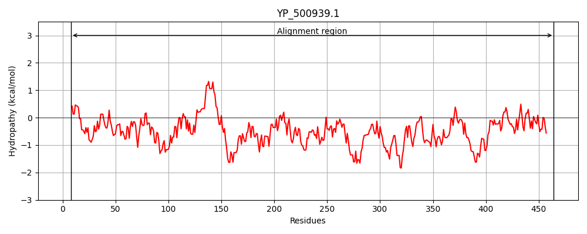
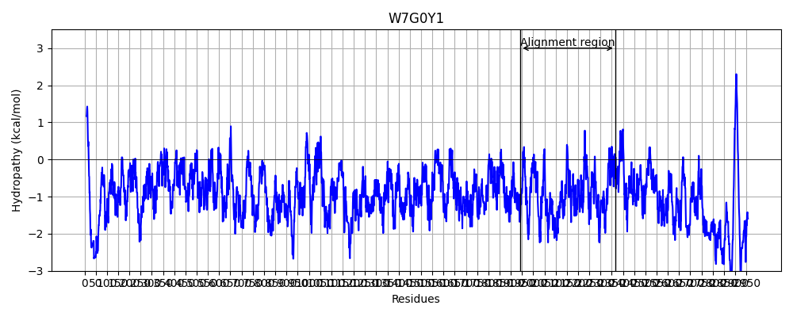
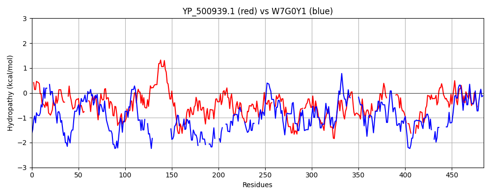

Hit Accession: W7G0Y1
Hit TCID: 1.C.105.2.10
Hit Description: gnl|BL_ORD_ID|20672 gnl|TC-DB|W7G0Y1|1.C.105.2.10 Reticulocyte-binding protein OS=Plasmodium falciparum Santa Lucia GN=PFAG_00579 PE=4 SV=1
Mach Len: 484
e:0.000000
Query TMS Count : 0
Hit TMS Count: 0
TMS-Overlap Score: 0.000000
Predicted Substrates:CHEBI:25367;molecule
BLAST Alignment:
Score: 132 , Bit scores: 55 bits, E-value: 4.6e-08, Alignment length: 484, Percentage identity: 22
Query: 8 NVELIGTKIITMEDFYKMKEEEFFLKSKLPLYLYSF---NYVDEYTMKLLDRGRISI----LNTKTNKDCIFDISKYIHENIIFRRDIFELNDIRDDDLKYKINGYNIEVYLSGELEKIVKHLFENKFDVEYGFYILFIKPIFEIVFSSNYVKEEFNTKIESSEYRESLDSFNEILMKYLENEINFKEVWKKYIDELFKKLNVQKLLIHKKIESLISSYDKKISDDCSMYSKVFEQYKKNVVLDKVYYSEVYKYSDNL---IKVFSEDVWNIMGYKKYNEYFTNRDDTTLK-ITNLYIGQSFGTEGNRNVIDRIGKGHEKLQEIMTYQPENRKTVLIFYKIQPDNIYITNQYGKEAVSRLKRILEQ--SIPNKEYIDLSEI---------SLITFFKPEYNK-QHVN----EEFNSLSSSKIKNLAKENDGIIIYLNFKDVNYQLISEGNTFFSAKPYLHCVFNKDILNMDKVDIENFFKSIEV 464
N+E I +I T+ D +K + FF++ + N V+ Y + + + I L K + + YI I + I E N + ++ + + NI++ + +L K +K+ E + DV + +KE++N +Y + + E L KY +N+++ K Y++ N +K K ++ ISSY KI++ + +K++ K + Y++ + K S+ L IK ++ I+ +Y+ N+D+ K I N I + E N+ I ++ Q+I+T + K+ ++ I Q +EA+++ K IL +I NK+ + ++ ++ + EY K Q++N E+ S+ KIKN+ ++N I Y N + + NT + H N DIL +K+ +E K++++
Sbjct: 1943 NIEKIKQEINTLSDVFK--KPFFFIQLNTDSSQHEKDINNNVETYKNNIDEIYNVFIQSYNLIQKYSSEIFSSTLNYIQTKEIKEKSIKEQNQLNQNEKEASVLLKNIKINETIKLFKQIKN--ERQNDV-------------------HNIKEDYNLL---QQYLNYMKNEMEQLKKY-KNDVHMD---KNYVENN----NGEK---EKLLKETISSYYDKINN---INNKLYIYKNK----EDTYFNNMIKVSEILNIIIKKKQQNEQRIVINAEYDSSLINKDEEIKKEINNQIIELNKHNENISNIFKDIQNIKKQSQDIITNMNDMHKSTILLVDII--------QKKEEALNKQKNILRNIDNILNKKENIIDKVIKCNCDDYKDILIQNETEYQKLQNINHTYEEKKKSIDILKIKNIKQKN--IQEYKN-------KLEQMNTIINQSIEQHVFINADILQNEKIKLEEIIKNLDI 2365 | Protein Hydropathy Plots: |
|---|
|  |  |
Pairwise Alignment-Hydropathy Plot:
|
|---|
|  |